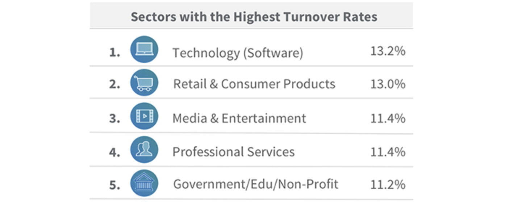
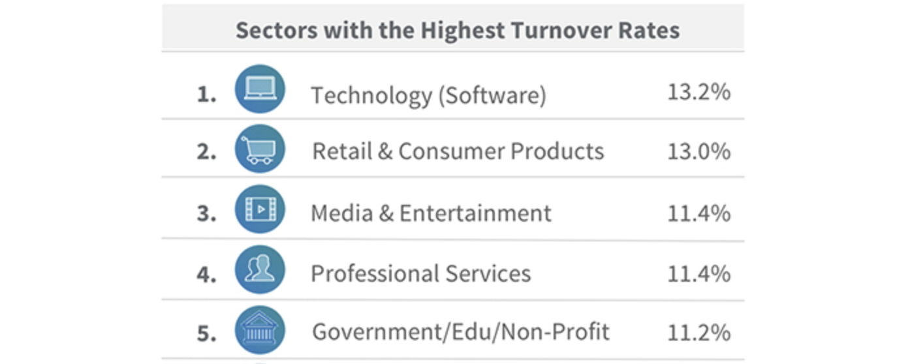
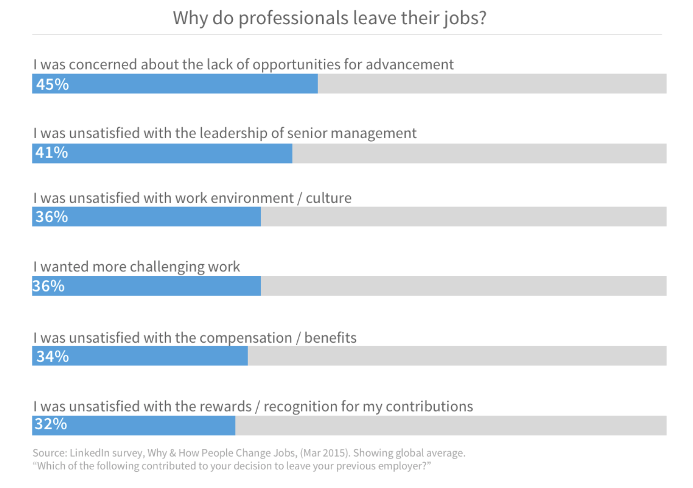

According to Linkedin research Retail industry is on history highest point when it comes to salesforce churn and suffering a huge profit and growth opportunity loss.
According to Linkedin research Retail industry is on history highest point when it comes to salesforce churn and suffering a huge profit and growth opportunity loss.
The top reason why people leave the key players in retail industry: a lack of opportunities for advancement (45%). The other biggest reasons people jumped included being unhappy with leadership (41%), being unhappy with the work environment (36%), and a desire for more challenging work (36%).
One company recently did a great job on avoiding all of this challenges in style. Lindex, a Swedish based retail giant that is taking over the Europe with high quality clothing. Their goal in past couple of years was to penetrate the new markets and to explore all the growth opportunities locally. Susanne Ehnbåge, company CEO, shared what led her team to this success point.
„Two simple, yet effective solutions that we’ve identified, besides hiring the right staff and nurturing them, was to be able as a retail chain to provide an adequate and timely appropriate training to our salesforce. Second part was to cultivate team culture trough a stronger bond with each employee.“
So, how did they acctually did it?
Lindex partnered up with 30 Hills, a Belgrade based digital product studio, and tested their new retail productivity solution called Boostowski. Simple and intuitive mobile app solution gathered valuble insights in everyday operational challenges and easily bridged the gap between the staff and the leadership team. Bonuses were achieved, teams performed better and overall employee churn was reduced.
„It all came down to the need for the easy-to-use and flexibile system to communicate our strategy effectivey, as well as to inspire every team member to provide his contribution to company culture. Boostowski was our revelation that we came accros during the TechCrunch Disrupt 2019 event, where it was presented to us as a true retail wonder, as it happened to be.”
Nikola Jevtić /marketing/technology/digital/